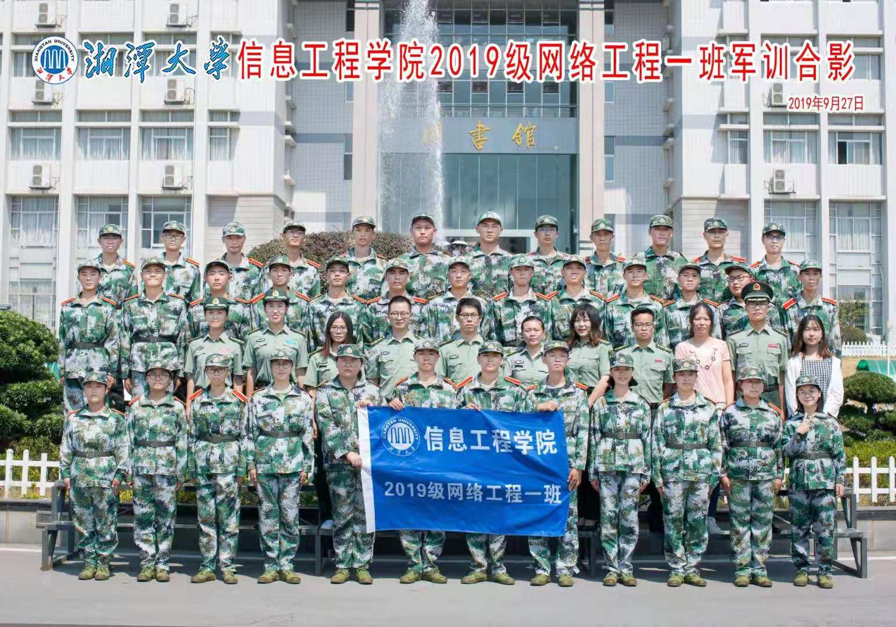
9月20日 军训第一天
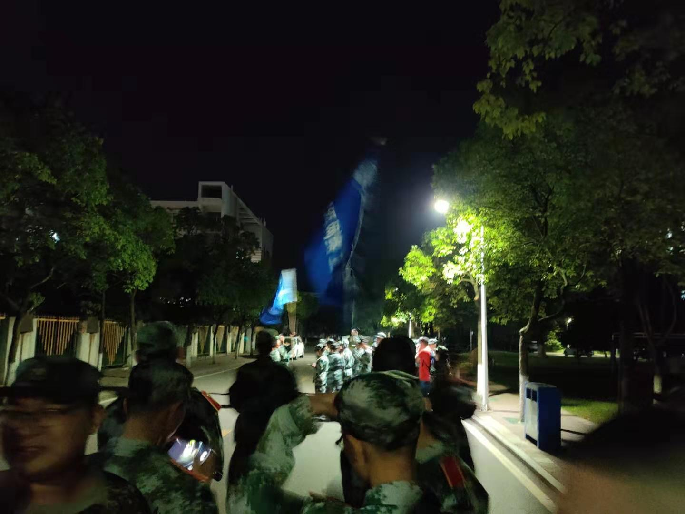
转眼假期已过，迎来了大学的新生活，军训
自然是不可或缺的一部分。今天便是军训的
第一天，走进操场便看到那些令人振奋的口
号如“军令如山”等。在歇息了一个暑假之
后，猛地以活动，身体自然是有些吃不消，
但是看到那些教官的走姿，站姿，军姿，一
定是经历了比我们还要艰苦的训练。他们那
日复一日，年复一年的练习，而我们仅仅是
训练这十七天，难道还坚持不过来吗？我们
要用行动证明，我们可以！
9月23日 军训第四天
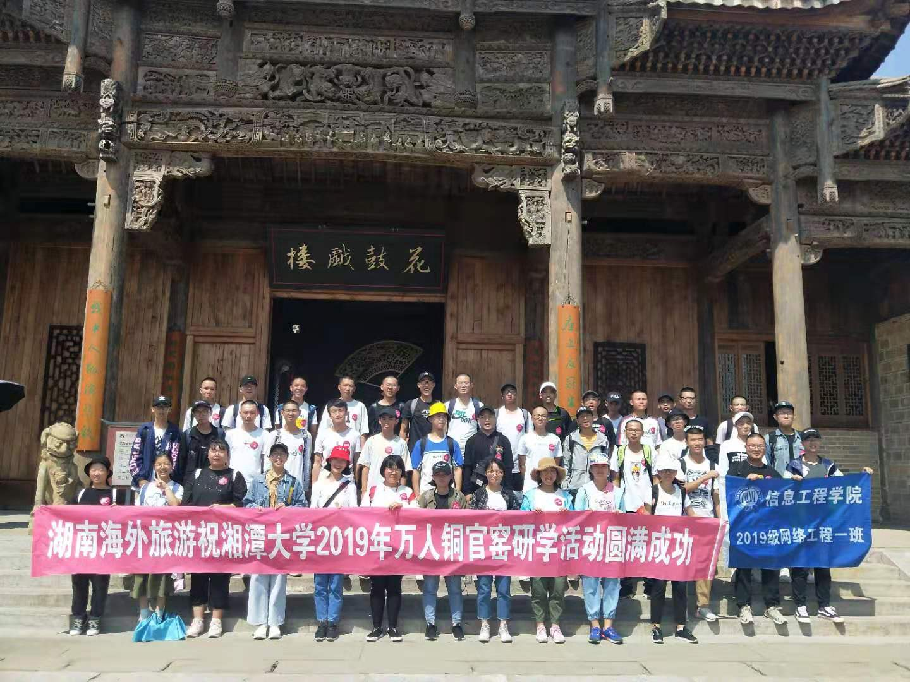
2019年9月23日，湘潭大学新生军训第三营参加了铜官窑研学一日游。铜官窑，丝绸之路的足迹，是一个湖南人甚至全中国人都闻于耳目的文化名地。
邵峰高，湘水长，载着湘大学子的赤心，伴着清晨氤氲的醒雾，同学们踏上了旅程。一路上大家高唱红歌，斗志昂扬，势传金柝，于9时许抵达目的地。首先映入眼帘的是一座古镇：五步一楼，十步一阁；杨柳岸，湖波潋滟；宝塔镇，风韵犹在；湘大人，胸怀热血。
9月30日 军训第十一天
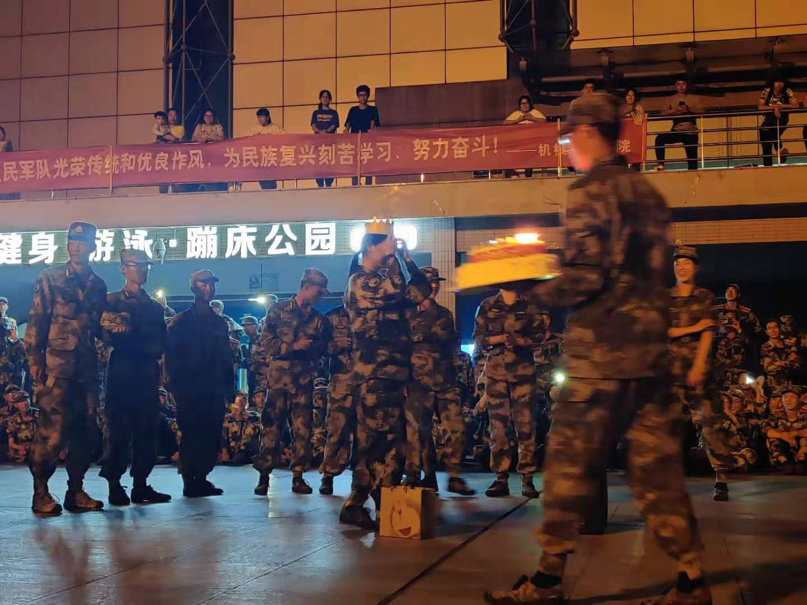
在结束了一天的辛苦训练后，教官们给我们带来了一个惊喜——军训晚会，教官们表演才艺，让我们看见了私底下不一样的他们，拉近了我们与教官们之间的距离。在晚会最后，营长也给副营长带来了一个惊喜，明天既是祖国母亲的生日也是副营长的生日，三营全体为副营长唱生日歌庆生。
10月1日 军训第十二天
祖国母亲70岁华诞
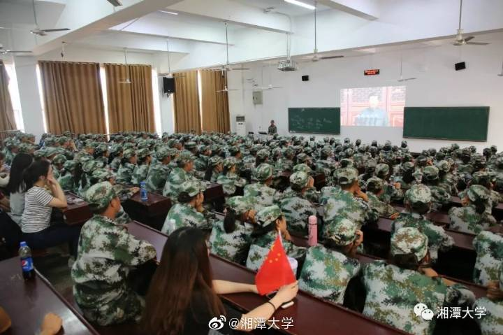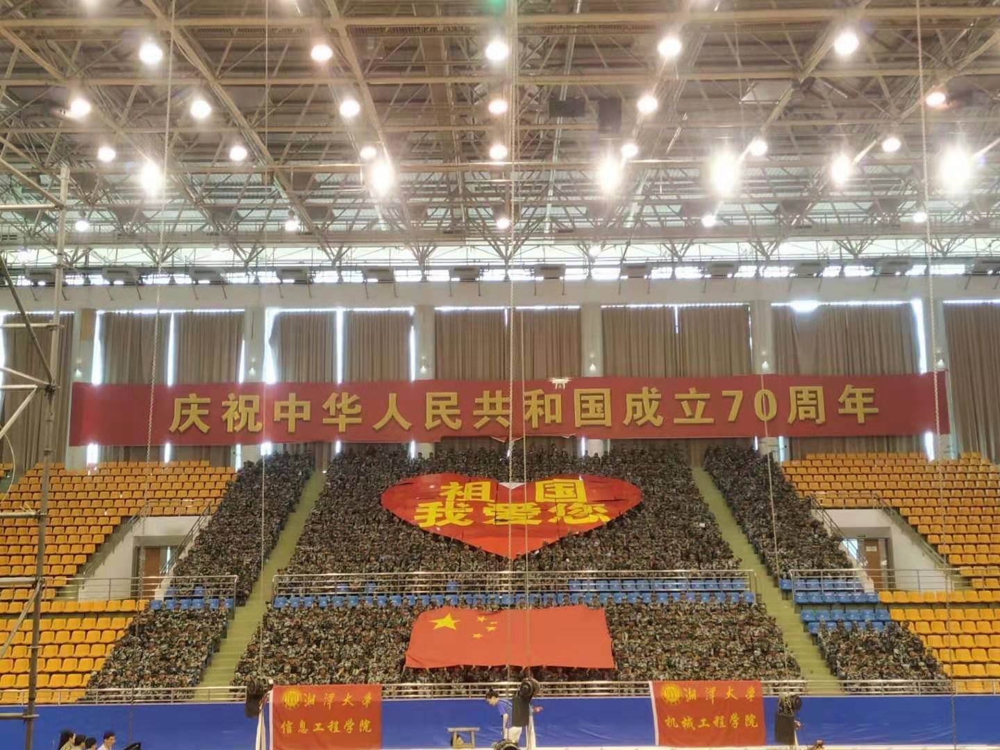
我校师生在逸夫楼报告厅、多媒体教室、南苑食堂、琴湖食堂、经管楼阶梯教室、北山阶梯教室等地集中收看庆祝中华人民共和国成立70周年大会直播，近万名师生前往观看。不少学生在泽园、沁园、一田文化广场及各宿舍区内观看直播。下午在新体，三营全体通过摆字的方式，表达对祖国母亲的忠诚和热爱。
10月3日 军训第十四天
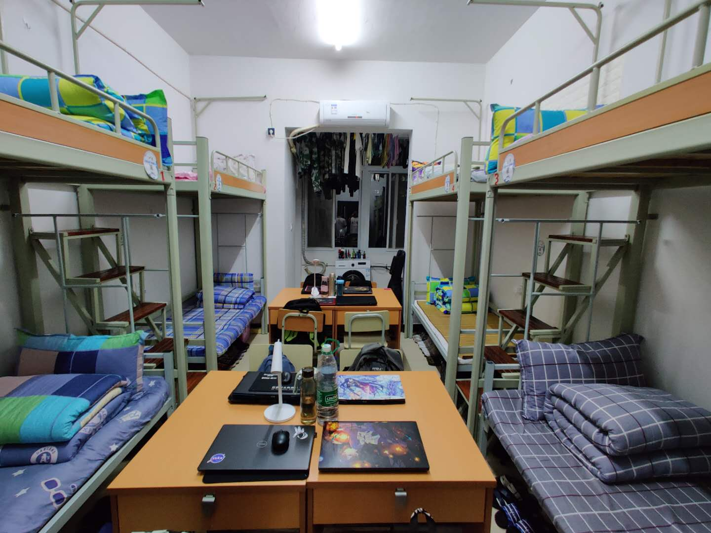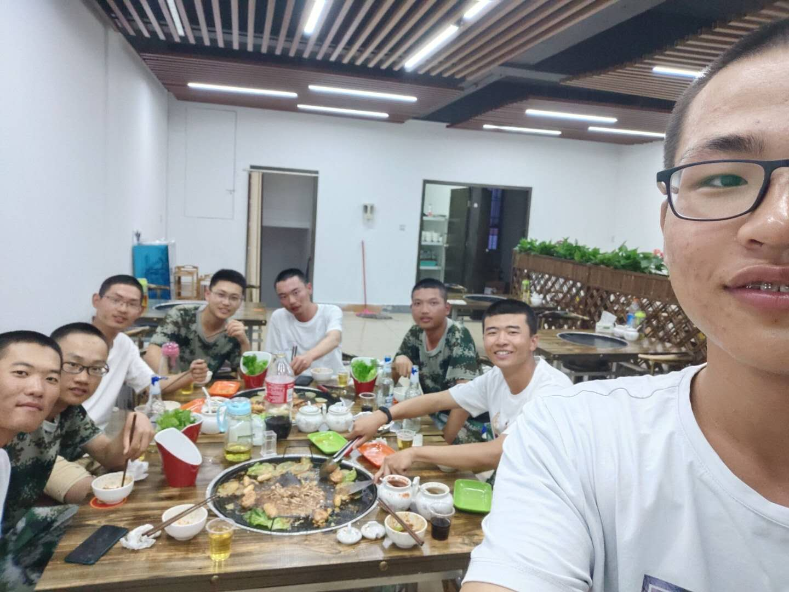
军训临近尾声，内务检查随之到来，全寝室行动起来，收拾床铺，衣服，杂物，井然有序，被子叠成方块状，书本摆放整齐，地面拖得明亮如镜。晚上7:30，教官们准时到来检查内务，我们寝室得到了教官们的一致好评，检查完毕后，全寝室在金翰林商业街聚餐，增进感情，交流军训心得，分享感受。
10月7日 军训第十七天
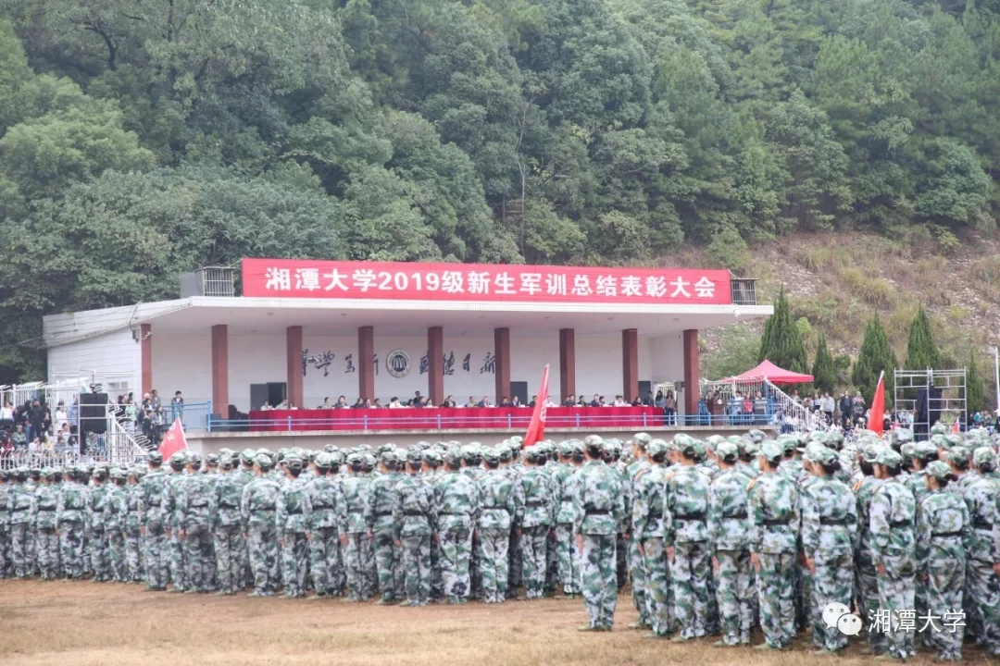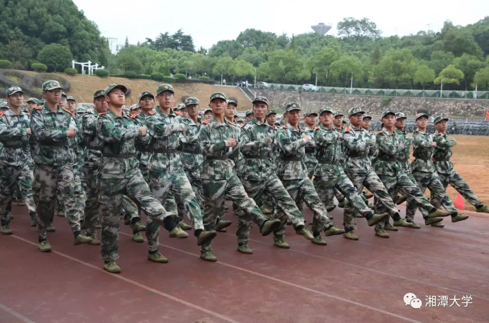
秋风乍起，丹桂飘香，翻滚的热浪随着军训时光的流逝慢慢消散。今日上午，军训总结表彰大会在第二田径场隆重举行。2019级7000余名新生庄严列队，接受检阅。
17天，直面烈日的炙烤，经受风尘的洗礼，挥洒汗水却收获了感动，精疲力尽却也百炼成钢。军训磨练出我们坚毅的体魄、坚强的意志、心灵的富足。我们顽强拼搏，坚韧不拔，团结友爱，共同为集体、为自己争光，赢得了满满的荣誉！
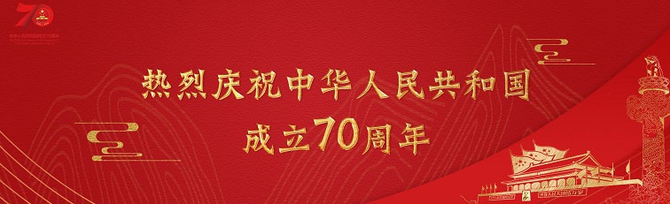
Copyright © 201905555537 网络工程一班 李蓟洋